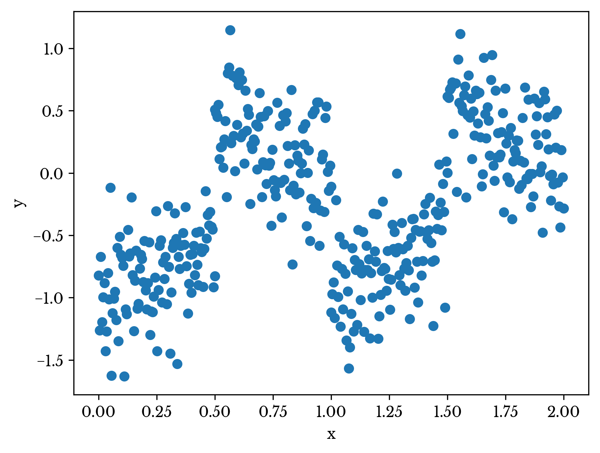
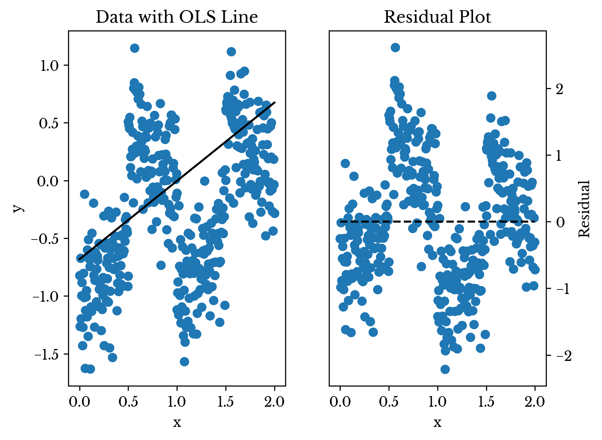
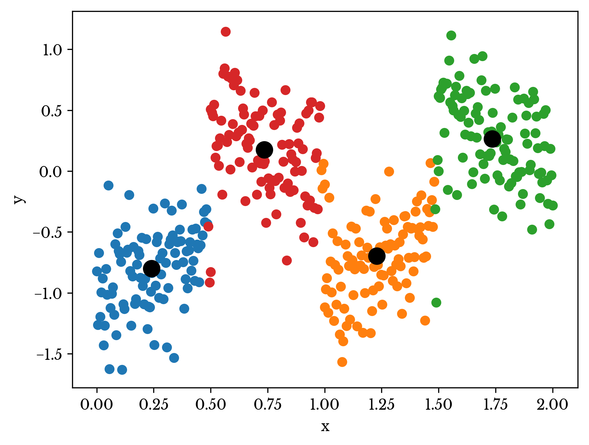
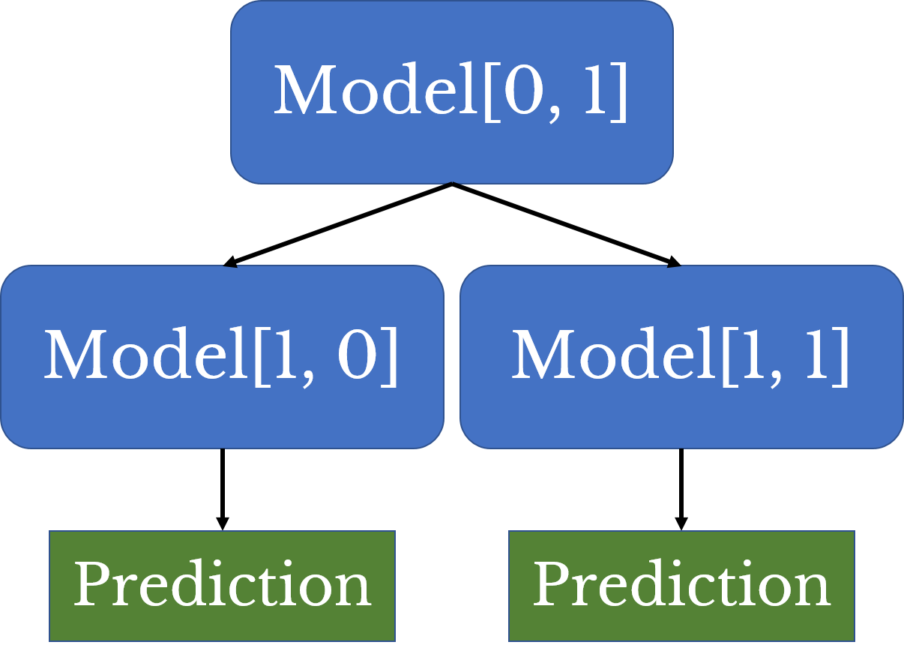
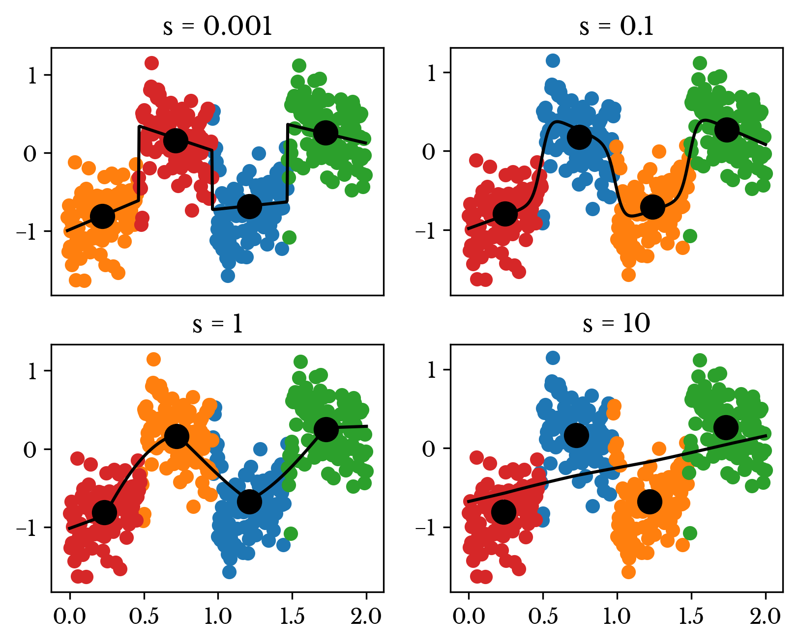

A Method for Addressing Nonhomogeneous Data using an Implicit Hierarchical Linear Model
Sat, 27 Oct 2018
Computer Science, Data Science, Linear Algebra, Linear Models, Machine Learning, Mathematics, Research, Statistics
Datasets containing nonhomogenous groups of samples present a challenge to linear models. In particular, such datasets violate the assumption that there is a linear relationship between the independent and dependent variables. If the data is grouped into distinct clusters, linear models may predict responses that fall in between the clusters. These predictions can be quite far from the targets depending on how the data is structured. In this post, a method is presented for automatically handling nonhomogenous datasets using linear models.
A Motivating Example
Consider the dataset plotted in Figure 1. A single independent variable
x describes the dependent variable
y. The data set appears to be grouped into four main clusters. Further, the relationship between
x and
y differs for each of the clusters.

Figure 1: A Nonhomogenous Dataset
As seen in Figure 2, a simple linear regression model for the dataset does quite poorly. The R² of the model is roughly 0.17.

Figure 2: OLS Performance on Example Dataset
The reason for the poor performance is clear from the plot. There are four distinct trends present and so a single straight line cannot hope to model the data well. Further, ordinary least squares (OLS) minimizes the sum of all residuals simultaneously, and so the line represents somewhat of an average of the four distinct trends. Since the data falls into relatively tight but distinct clusters, the predictions typically fall far from the targets.
Capturing Distinct Patterns
Clustering is employed to capture different patterns in the dataset. Clustering is an unsupervised learning technique for grouping together portions of the input set that are similar. In this case, the KMeans algorithm is used, though any technique that produces centroids can be employed.
KMeans clustering is typically accomplished through an iterative procedure known as Lloyd’s algorithm. The algorithm begins with some initial clusters, typically generated randomly. Each data point is assigned to its nearest cluster. The new clusters are then taken to be the average of all data points in the cluster. This procedure is iterated until convergence [1].

Figure 3: Clustered Data Points
The number of cluster centers is selected using cross-validation and is an additional tuning parameter for the model. Figure 3 shows a KMeans clustering applied to the original dataset with 4 clusters. The large black dots represent the cluster centroids. Note that clustering is only applied to the independent variable(s), in this case
x.
A Typical Hierarchical Model
In a hierarchical model, a model assigns an input sample to one of several subordinate models. The subordinate model makes the final prediction. Figure 4 shows a diagram of a typical hierarchical model.

Figure 4: A Simple Hierarchical Model
In this case, the root model is a clustering model with subordinate linear regression models. So, a regression model can be fit to each of the above identified clusters. To form a prediction for an input sample, the nearest centroid is identified and then the corresponding regression is used to make the ultimate prediction. However, this is not the approach taken here. Instead, a single model is fit to an expanded feature set that models the hierarchical approach.
Constructing an Implicit Linear Hierarchical Model
Consider the typical linear regression formula
\[\displaylines{\textbf{A}\textbf{x}=\textbf{y}}\ ,\]
where
A is an
mx
n data matrix with the first column a constant value of 1 used to compute the intercept term. For each input sample, the Mahalanobis distances to each of the clusters are computed [2]. Using these distances, cluster weights are computed as
\[\displaylines{w_{ik}=\frac{e^{- \lVert \textbf{x}_i - \textbf{c}_{k} \rVert / \sigma}}{\sum\limits_{j=1}^{C}{e^{- \lVert \textbf{x}_i - \textbf{c}_{j} \rVert / \sigma}}} }\ ,\]
using the function
\[\displaylines{f(\textbf{x})=e^{- \lVert \textbf{x} - \textbf{c}_{k} \rVert / \sigma}}\ ,\]
where \(x_i\) is the
i-th sample, \(c_k\) is the
k-th cluster, and
s is a free parameter. This function represents a Gaussian function centered around the cluster. The denominator normalizes the weights so that they sum to one.
Let \(\textbf{W}_k\) be the
mx
m diagonal matrix with the weight \(w_{ik}\) at the
i-th diagonal element of the matrix. Now construct a new horizontally stacked data matrix
B as
\[\displaylines{\textbf{B}=\left(\begin{array}{c|c|c|c}\textbf{W}_1 \textbf{A} & \textbf{W}_2 \textbf{A} & \ldots & \textbf{W}_C \textbf{A} \end{array}\right) }\],
where C is the number of clusters. Notice that B has dimension mx(nC). Further, since
\[\displaylines{\sum\limits_{j=1}^{C}{\textbf{W}_j}=\textbf{I}}\ .\]
notice that
\[\displaylines{\sum\limits_{j=1}^{C}{\textbf{W}_j \textbf{A}}=\textbf{A}}\ .\]
To gain intuition into the nature of the new feature space, it is interesting to observe the limiting behavior as \(\sigma \to 0\). That is
\[\displaylines{\lim\limits_{\sigma \to 0}\frac{e^{- \lVert \textbf{x}_i - \textbf{c}_{k} \rVert / \sigma}}{\sum\limits_{j=1}^{C}{e^{- \lVert \textbf{x}_i - \textbf{c}_{j} \rVert / \sigma}}} }\ .\]
Canceling the term in the numerator we have,
\[\displaylines{\lim\limits_{\sigma \to 0}\frac{1}{1+\sum\limits_{\substack{j=1 \\ j \neq i}}^{C}{e^{(\lVert \textbf{x}_i - \textbf{c}_{k} \rVert - \lVert \textbf{x}_i - \textbf{c}_{j} \rVert) / \sigma}}} }\ .\]
Notice that if the sum contains any infinite terms, then the fraction is 0. Thus, the fraction is only non-zero for the smallest value of \(\lVert \textbf{x}_i - \textbf{c}_{k} \rVert\). For this term, the sum is 0 and so the fraction is 1. Thus, \(w_i\) is 1 for the cluster of minimum distance and 0 for all others.
In this limiting form, the matrix
B becomes sparse with a maximum of
mn non-zero terms in a matrix with
mnc elements. It has precisely the same number of non-zero terms as does
A. In this case the matrix
B can be arranged as a block matrix,
\[\displaylines{\textbf{B}=\left(\begin{array}{cccc}\textbf{A}_1 & \textbf{0} & \ldots & \textbf{0} \\ \textbf{0} & \textbf{A}_2 & \ldots & \textbf{0} \\ \vdots & \vdots & \ddots & \vdots \\ \textbf{0} & \textbf{0} & \ldots & \textbf{A}_C \end{array}\right) }\ .\]
Notice the singular value decomposition (SVD) of such a matrix can be computed as the SVD of its blocks [3]. The SVD is
\[\displaylines{\begin{gathered}\textbf{B}=\textbf{U}\textbf{D}\textbf{V}^{T}=\\
\left(\begin{array}{cccc}\textbf{U}_1 & \textbf{0} & \ldots & \textbf{0} \\ \textbf{0} & \textbf{U}_2 & \ldots & \textbf{0} \\ \vdots & \vdots & \ddots & \vdots \\ \textbf{0} & \textbf{0} & \ldots & \textbf{U}_C \end{array}\right)\left(\begin{array}{cccc}\textbf{D}_1 & \textbf{0} & \ldots & \textbf{0} \\ \textbf{0} & \textbf{D}_2 & \ldots & \textbf{0} \\ \vdots & \vdots & \ddots & \vdots \\ \textbf{0} & \textbf{0} & \ldots & \textbf{D}_C \end{array}\right)
\left(\begin{array}{cccc}\textbf{V}_1^T & \textbf{0} & \ldots & \textbf{0} \\ \textbf{0} & \textbf{V}_2^T & \ldots & \textbf{0} \\ \vdots & \vdots & \ddots & \vdots \\ \textbf{0} & \textbf{0} & \ldots & \textbf{V}_C^T \end{array}\right)\end{gathered} }\ .\]
Thus, the limiting form of the model is equivalent to fitting
C linear regression models to each of the
C clusters. Since the constant intercept term is also duplicated, each model has both a unique set of coefficients and an intercept.
Regularization is advantageous in this model to improve the conditioning of the solution. However, care must be taken in constructing the penalization matrix in order to avoid penalizing the intercept terms. With regularization, the SVD cannot be split as the penalty is shared among the implicit models. Instead a diagonal regularization matrix with 0s in each of the intercept columns is constructed. Such a matrix is a form of generalized Tikhonov regularization for which the solution can be obtained using generalized SVD [4]. Unfortunately,
numpy does not provide a GSVD implementation.
However, the problem as presented above is typically ill-conditioned. An alternative approach is presented in a future blog post that simultaneously improves the conditioning and avoids penalizing the intercept terms.
Constructing the Solution
The data matrix
B is constructed and a simple linear regression model is fit to the result. The results for \(s = 0.001\), \(s = 0.1\), \(s = 1\), and \(s = 10\) are shown in Figure 5.

Figure 5: Implicit Hierarchical Model Performance
Notice that for small values of
s the model begins to assume the form of four separate linear regression curves. As the value of s increases the model begins to assume the form of the single regression model.
If regularization is used, the model has 3 primary parameters: regularization weight \(\lambda\), the distance function scale \(\sigma\), and the number of clusters
C. If the clustering algorithm uses randomized initial clusters then the random seed can be considered as an additional parameter.
A Note on Performance
In the limiting case, the matrix
B can be efficiently represented with a sparse matrix. Since the run-time of sparse operations is dependent on the number of non-zero terms and not the dimensions of the matrix, the run-time for prediction is roughly equivalent to that of a dense model fit to only
A.
A Benchmark
The performance of the implicit linear hierarchical model (IHLM) is compared with traditional ridge regression and a support vector machine using a radial basis function kernel. The data set used to benchmark the performance is the abalone ring data set available on the
UCI machine learning repository. The task of the dataset is to predict the age of an abalone given several numerical measurements. The number of rings present in the abalone is directly related to its age [5].
| Method | Train R² | Test R² |
|---|
| Ridge | 0.5276 | 0.5287 |
| Kernel SVM | 0.5613 | 0.5594 |
| IHLM | 0.5817 | 0.5854 |
Table 1: ILHM Benchmark Results
Table 1 shows the performance of the three models on this dataset. A regularization weight of 1 is chosen for the ridge model. A regularization weight of 1 and kernel coefficient of 0.2 are chosen as parameters for the SVM model. Eight clusters, \(\sigma = 0.2\), and a regularization weight of 0.8 is used for the ILHM model.
| Method | Train | Predict |
|---|
| Ridge | 1.13 ms ± 30.2 µs | 106 µs ± 12 µs |
| Kernel SVM | 855 ms ± 85.2 ms | 457 ms ± 24.6 ms |
| IHLM | 438 ms ± 75.6 ms | 3.71 ms ± 467 µs |
Table 2: ILHM Run-Time Benchmark Results
Table 2 shows run-time performance for the three models for both training and prediction. As can be seen, IHLM performs significantly better than both the ridge and SVM models for the training and cross-validation sets. The prediction run-time for IHLM is dramatically lower than that of SVM; the training time is a more modest improvement.
Conclusion
These results highlight the ability of the ILHM to capture nonlinearity in the data. The fact that the model achieves higher cross-validation performance than the ridge model suggests that the dataset is somewhat nonhomogenous. This is often the case when datasets contain sub-populations with unique characteristics. For instance, a dataset for predicting BMI might have nonhomogeneous sub-populations for men and women. In many problems though, the distinctions are not so clear. Applying an ILHM can help explain more nonlinearity in the dataset without sacrificing too much interpretability.
References
| [1] | MacKay, David (2003). "Chapter 20. An Example Inference Task: Clustering" (PDF). Information Theory, Inference and Learning Algorithms. Cambridge University Press. pp. 284-292. ISBN 0-521-64298-1. MR 2012999 |
| [2] | Mahalanobis, Prasanta Chandra (1936). "On the generalised distance in statistics" (PDF). Proceedings of the National Institute of Sciences of India. 2 (1): 49–55. Retrieved 2016-09-27. |
| [3] | Golub, Gene H., and Christian Reinsch. "Singular value decomposition and least squares solutions." Numerische mathematik 14.5 (1970): 403-420. |
| [4] | Dykes, Laura, and Lothar Reichel. "Simplified GSVD computations for the solution of linear discrete ill-posed problems." Journal of Computational and Applied Mathematics 255 (2014): 15-27. |
| [5] | Sam Waugh (1995) "Extending and benchmarking Cascade-Correlation", PhD thesis, Computer Science Department, University of Tasmania. |